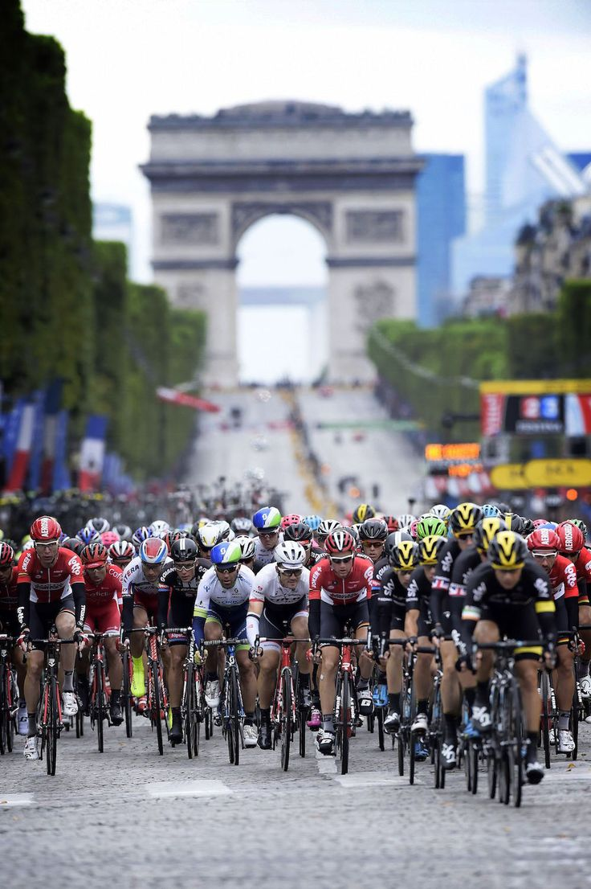

Overview
Cycling is a versatile activity that caters to a range of fitness levels and goals, from relaxing leisure rides to high-intensity workouts for endurance and strength.
Benefits
Mental Health Benefits
Boosts mood and provides a sense of freedom, helping to reduce stress and promote happiness.
Physical Benefits
Strengthens muscles, improves cardiovascular health, and enhances overall fitness.
Materials and Requirements
Essential items to begin cycling:
- A bicycle suited to your terrain and goals
- A helmet for safety
- Protective and safety gear

Getting Started
Begin with short rides in your neighborhood to build confidence and endurance. Gradually explore new routes and terrains as you become more comfortable.
Levels of Engagement
As you gain experience, try mountain biking on rugged trails or take on the challenge of long-distance cycling events. Push your limits while enjoying the journey.

Social and Community Aspects
Join cycling clubs or participate in races to meet fellow enthusiasts, share tips, and celebrate the joy of cycling together.

Fun Facts and Trivia
Did you know? The Tour de France, the world’s longest cycling race, covers over 2,000 miles! It’s a testament to human endurance and determination.
 Hop on a bike and pedal your way to fun!